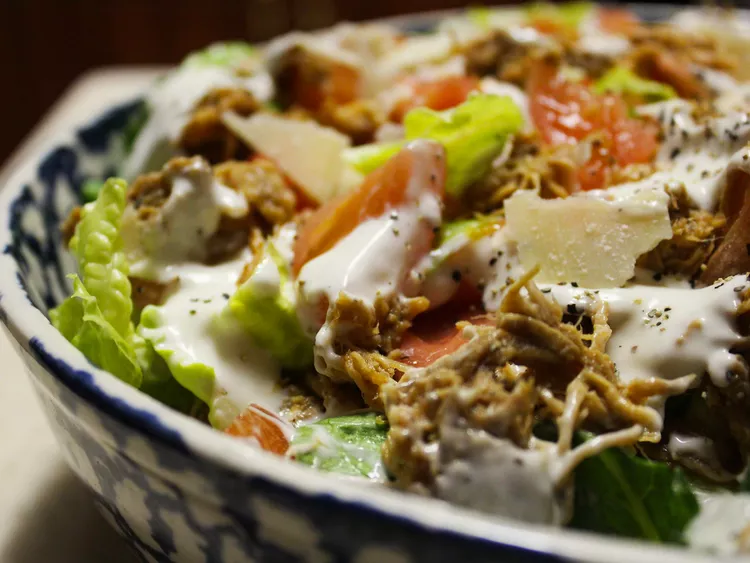

Easy and Fast Cajun Chicken Caesar Salad
This Cajun-spiced blackened chicken Caesar salad is an easy lunch, main dish, or supper for one or more. I'll tell you this one isn't a bore!

Ingredients
- ¼ pound bacon
- 4 skinless, boneless chicken breast halves - cut into strips
- 1 teaspoon Cajun seasoning
- 1 tablespoon light olive oil
- 1 head romaine lettuce- rinsed, dried and chopped
- ½ cup Caesar salad dressing
- ⅓ cup grated Parmesan cheese
How to make Cajun Caesar
- Place bacon in a large, deep skillet. Cook over medium-high heat until evenly brown; crumble and set aside.
- In a preheated skillet, add chicken, seasoning mix, and oil. Cook until chicken is golden brown and cooked through. Remove from heat and set aside.
- In a salad bowl, combine Romaine, enough salad dressing to coat, Parmesan cheese, and crumbled bacon; toss and place on individual salad plates. Top with chicken and serve.